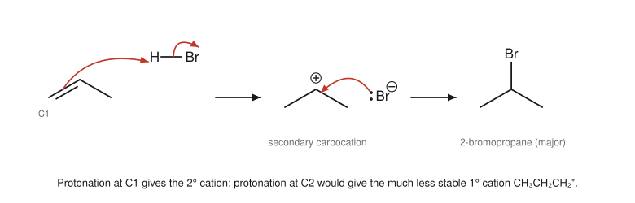
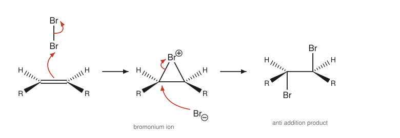

Chapter 7: Alkenes and Alkynes¶
Addition reactions of carbon–carbon multiple bonds
The π bond of an alkene is a store of loosely held electrons sitting above and below the plane of the molecule. Electron-seeking reagents attack it, and the typical result is addition: the π bond disappears and two new σ bonds form, one to each carbon. A handful of addition reactions turns an alkene into an alkane, a haloalkane, an alcohol, a diol, an epoxide or a pair of carbonyl compounds, which makes alkenes among the most versatile starting materials in synthesis. This chapter explains the stability of alkenes, the mechanism of electrophilic addition and the rules that predict where the new groups go, and then extends the same ideas to alkynes.
Learning outcomes
By the end of this chapter you should be able to:
- relate the stability of alkenes to their substitution pattern and geometry;
- write the mechanism of electrophilic addition of HX and explain Markovnikov's rule in terms of carbocation stability;
- predict products when carbocation rearrangements can occur;
- describe the addition of halogens through a bromonium ion and explain anti addition;
- give the reagents and products, including regiochemistry and stereochemistry, for hydration, hydroboration–oxidation, hydrogenation, epoxidation, dihydroxylation and ozonolysis;
- describe the acidity of terminal alkynes and the main addition reactions of alkynes;
- use the bromine-water test for unsaturation.
7.1 Structure and stability of alkenes¶
An alkene has a C=C double bond made of one σ bond and one π bond (Section 1.5). The two carbons of the double bond and the four atoms attached to them all lie in one plane, with bond angles of about 120°. Because the π bond prevents rotation, alkenes with two different groups on each carbon exist as E/Z isomers (Section 3.2).
Not all alkenes are equally stable. A convenient measure is the heat of hydrogenation, the energy released when H₂ adds to the double bond to give an alkane. For the three butenes, which all give butane:
| Alkene | Structure | Heat of hydrogenation (kJ mol⁻¹) |
|---|---|---|
| but-1-ene | CH₂=CHCH₂CH₃ | −126 |
| (Z)-but-2-ene | cis-CH₃CH=CHCH₃ | −119 |
| (E)-but-2-ene | trans-CH₃CH=CHCH₃ | −115 |
Table 7.1. Heats of hydrogenation of the butenes. Less heat released means a more stable alkene.
Two rules follow:
- More substituted alkenes are more stable. An alkene with more alkyl groups on the double-bond carbons is lower in energy: tetrasubstituted > trisubstituted > disubstituted > monosubstituted > ethene. Alkyl groups donate electron density to the sp² carbons, partly by hyperconjugation.
- Trans (E) alkenes are more stable than cis (Z), because in the cis isomer the two groups on the same side crowd each other.
These rules matter when a reaction can make more than one alkene, as in the eliminations of Chapter 9: the more stable alkene is usually the main product.
7.2 Electrophilic addition of hydrogen halides¶
Alkenes react with hydrogen halides (HCl, HBr, HI) to give haloalkanes. With ethene there is only one possible product:
The mechanism¶
The reaction takes place in two steps.
- The π bond attacks the proton. The alkene is the nucleophile and H–Br the electrophile. The π electrons form a new C–H bond to one carbon, and the H–Br bonding pair leaves with bromine as Br⁻. The other carbon of the former double bond is left with only three bonds: a carbocation. This step is slow and rate-determining.
- Bromide attacks the carbocation. The bromide ion, a nucleophile, gives a lone pair to the empty p orbital of the cation, forming the C–Br bond.
The overall process is called electrophilic addition, after the first step, in which the alkene is attacked by an electrophile.
Markovnikov's rule¶
With an unsymmetrical alkene such as propene, two products are possible: 1-bromopropane and 2-bromopropane. In practice the product is almost entirely 2-bromopropane. In the nineteenth century the Russian chemist Vladimir Markovnikov summarised many such results in a rule: when HX adds to an unsymmetrical alkene, the hydrogen goes to the carbon that already has more hydrogens.
The mechanism explains why. The product is decided in the first step, when the proton adds. If the proton adds to C1 (the CH₂ end), the positive charge is left on C2, giving a secondary carbocation. If it adds to C2, the charge is left on C1, giving a primary carbocation. The secondary cation is much more stable (Section 5.6), and by the Hammond postulate the transition state leading to it is lower in energy, so that path is much faster.

Key idea
The modern form of Markovnikov's rule: an electrophile adds to an alkene so as to form the more stable carbocation. This version works for any electrophile, not only H⁺, and explains every case the original rule describes.
A reaction that can give two constitutional isomers but gives mainly one is called regioselective. Electrophilic addition of HX is strongly regioselective.
Example 7.1: Predicting Markovnikov products
Predict the main product of (a) 2-methylpropene + HCl; (b) 1-methylcyclohexene + HBr.
(a) (CH₃)₂C=CH₂. Adding H⁺ to the CH₂ carbon gives the tertiary cation (CH₃)₃C⁺; adding it to the other carbon would give a primary cation. Chloride then captures the tertiary cation: 2-chloro-2-methylpropane, (CH₃)₃CCl.
(b) The double bond joins C1 (which carries the methyl) and C2 (which carries a hydrogen). Adding H⁺ to C2 gives a tertiary cation at C1. Bromide adds there: 1-bromo-1-methylcyclohexane.
Carbocation rearrangements¶
Because the reaction passes through a carbocation, the cation can rearrange before the halide arrives, if a hydride or alkyl shift would make it more stable. Adding HCl to 3-methylbut-1-ene, CH₂=CH–CH(CH₃)₂, first gives a secondary cation at C2. A hydrogen on the neighbouring C3, with its pair of electrons, then shifts to C2, putting the positive charge on C3, which is tertiary. Chloride captures both cations, but the rearranged product, 2-chloro-2-methylbutane, is the major one, alongside some 2-chloro-3-methylbutane. Rearrangements like this are evidence that a carbocation intermediate is really formed.
The peroxide effect¶
Hydrogen bromide (but not HCl or HI) adds to alkenes the "wrong" way, anti-Markovnikov, when peroxides (R–O–O–R) are present. Peroxides start a radical chain: a bromine atom adds to the alkene first, at the end that gives the more stable carbon radical, and the resulting radical then takes a hydrogen atom from HBr. So propene with HBr and a peroxide gives 1-bromopropane. The orientation is still decided by forming the more stable intermediate; it is simply that the first species to add is Br•, not H⁺.
7.3 Addition of water: hydration¶
Water itself does not add to alkenes, because it is not acidic enough to protonate the π bond. With an acid catalyst (dilute sulfuric or phosphoric acid), alkenes add water to give alcohols. The mechanism is the same as for HX, with water as the nucleophile:
- The alkene is protonated to the more stable carbocation.
- Water attacks the carbocation, giving an oxonium ion, R–OH₂⁺.
- Water removes a proton from the oxonium ion, giving the alcohol and regenerating H₃O⁺, the catalyst.
The regiochemistry is Markovnikov: propene gives propan-2-ol. Industrially, ethanol is made by the direct hydration of ethene with steam over a phosphoric acid catalyst at high temperature and pressure. Because a carbocation is involved, rearrangements can occur, and the reaction is reversible: the reverse reaction, acid-catalysed dehydration of an alcohol, is a way of making alkenes (Chapter 10).
7.4 Addition of halogens¶
Bromine and chlorine add rapidly to alkenes at room temperature, without light, to give 1,2-dihalides (vicinal dihalides):
The test for unsaturation¶
Bromine water (or a solution of bromine in an inert solvent) is orange-brown. When it is shaken with an alkene, the colour disappears as the bromine adds. Alkanes do not decolourise bromine water in the dark. This is the classic laboratory test for a C=C double bond. (Bromine is toxic and corrosive, and the test is done in small quantities in a fume cupboard.)
The mechanism: a bromonium ion¶
Br₂ has no permanent dipole, but as it approaches the electron-rich π bond the Br–Br bond becomes polarised; the nearer bromine becomes δ+ and acts as the electrophile. The π electrons attack it and the Br–Br bond breaks, with the far bromine leaving as Br⁻. The intermediate is not an open carbocation but a three-membered ring, the bromonium ion, in which the bromine bridges both carbons and carries the positive charge (a lone pair on bromine forms the second C–Br bond).
The bromonium ion blocks one face of the molecule. The bromide ion must therefore attack from the opposite face, opening the ring. The two bromines end up on opposite faces of the original double bond: anti addition.

The stereochemistry is easiest to see with a ring. Cyclohexene and bromine give only trans-1,2-dibromocyclohexane (as a racemic mixture); no cis isomer is formed. A reaction in which the stereochemistry of the product is determined by the mechanism, so that a particular stereoisomer of the reactant gives a particular stereoisomer of the product, is called stereospecific.
Halohydrins¶
When bromine is added to an alkene in water, the solvent competes with bromide to open the bromonium ion. Water is present in vast excess, so the main product is a bromohydrin, with OH on one carbon and Br on the next, added anti. Water attacks the carbon of the bromonium ion that can better carry positive charge, which is the more substituted carbon. Propene therefore gives 1-bromopropan-2-ol, with OH on the central carbon: the electrophile (Br) has gone to the end with more hydrogens, as Markovnikov's rule predicts.
7.5 Hydroboration–oxidation: anti-Markovnikov alcohols¶
Sometimes we want the OH on the less substituted carbon. Hydroboration–oxidation achieves this in two steps.
- Hydroboration. Borane, BH₃ (used as a complex with a solvent such as tetrahydrofuran, THF), adds across the double bond. Boron, which has an empty p orbital, is the electrophile; it bonds to the less substituted carbon, while a hydrogen from boron moves to the other carbon. The B–H bond adds in one step through a four-centre transition state, so H and B add to the same face (syn addition), and no carbocation is formed, so there are no rearrangements.
- Oxidation. Alkaline hydrogen peroxide (H₂O₂, NaOH) replaces the boron with an OH group, with retention of configuration.
The net result is the anti-Markovnikov, syn addition of H and OH. Propene gives propan-1-ol; 1-methylcyclohexene gives trans-2-methylcyclohexan-1-ol, in which the H and OH that were added are cis to each other, so the methyl and OH end up trans.
Boron goes to the less substituted carbon for two reasons: it is a large group and that carbon is less crowded, and in the transition state a partial positive charge builds up on the more substituted carbon, which can stabilise it better.
7.6 Hydrogenation, epoxidation, dihydroxylation and ozonolysis¶
Catalytic hydrogenation¶
Alkenes add hydrogen in the presence of a finely divided metal catalyst, such as platinum, palladium or nickel, to give alkanes:
Both hydrogen and the alkene are adsorbed on the metal surface, and the two hydrogens are delivered from the surface to the same face of the alkene (syn addition). Hydrogenation is used in the food industry to harden vegetable oils into spreads. Partial hydrogenation can isomerise some of the remaining cis double bonds to trans, giving "trans fats", whose links to heart disease have led many countries to restrict them.
Epoxidation¶
A peroxycarboxylic acid (a peroxyacid, RCO₃H, such as 3-chloroperoxybenzoic acid, mCPBA) transfers an oxygen atom to an alkene in a single step, giving an epoxide, a three-membered cyclic ether (Chapter 10). The oxygen adds to one face, so the reaction is a stereospecific syn addition: a cis alkene gives a cis epoxide.
Dihydroxylation¶
Two OH groups can be added to the same face (syn dihydroxylation) with osmium tetroxide (OsO₄, usually in catalytic amounts with a second oxidant to regenerate it) or with cold, dilute, alkaline potassium manganate(VII) (KMnO₄). Both pass through a cyclic intermediate in which the metal is bonded to two oxygens that are delivered to one face. Cyclohexene gives cis-cyclohexane-1,2-diol. The colour change of KMnO₄, from purple to a brown precipitate of manganese(IV) oxide, is another test for unsaturation. Anti dihydroxylation is achieved in two steps, by epoxidation followed by ring opening with water and acid (Chapter 10).
Caution: hazardous reagents
Osmium tetroxide is volatile and very toxic, ozone is a toxic gas, and peroxyacids are strong oxidants. Reactions with them are carried out by trained chemists with full precautions, on small scale. In teaching laboratories, the milder tests (bromine water, dilute KMnO₄) are used under supervision with appropriate protection.
Ozonolysis¶
Ozone (O₃) cleaves the C=C double bond completely. The alkene is treated with ozone at low temperature, and the resulting ozonide is then worked up with a reducing agent such as zinc and water, or dimethyl sulfide. Each carbon of the old double bond becomes a C=O group:
Ozonolysis of 2-methylbut-2-ene gives propanone and ethanal. Working backwards from the carbonyl products tells you where the double bond was, which made ozonolysis an important tool for finding structures before spectroscopy (Chapter 14). Hot, acidified KMnO₄ also cleaves double bonds, but it oxidises further: a CH= carbon becomes a carboxylic acid, and a =CH₂ carbon becomes carbon dioxide.
A summary of alkene additions¶
| Reagents | Product from propene | Regiochemistry | Stereochemistry |
|---|---|---|---|
| HBr | 2-bromopropane | Markovnikov | not selective |
| HBr, peroxides | 1-bromopropane | anti-Markovnikov | not selective |
| H₂O, H⁺ catalyst | propan-2-ol | Markovnikov | not selective |
| 1. BH₃, THF; 2. H₂O₂, NaOH | propan-1-ol | anti-Markovnikov | syn |
| Br₂ | 1,2-dibromopropane | — | anti |
| Br₂, H₂O | 1-bromopropan-2-ol | Br to less substituted C | anti |
| H₂, Pt or Pd | propane | — | syn |
| RCO₃H (peroxyacid) | 2-methyloxirane (an epoxide) | — | syn |
| OsO₄ or cold KMnO₄ | propane-1,2-diol | — | syn |
| 1. O₃; 2. Zn, H₂O | ethanal + methanal | — | — |
Table 7.2. The main addition reactions of alkenes, illustrated with propene.
7.7 Conjugated dienes¶
A molecule with two double bonds separated by one single bond, such as buta-1,3-diene, CH₂=CH–CH=CH₂, is a conjugated diene. Its four p orbitals overlap continuously, so its π electrons are delocalised over all four carbons, which gives extra stability. With one equivalent of HBr, buta-1,3-diene gives two products. Protonation at C1 gives an allylic carbocation, whose charge is shared between C2 and C4 by resonance. Bromide can attack either carbon, giving 3-bromobut-1-ene (1,2-addition) or 1-bromobut-2-ene (1,4-addition). At low temperature the 1,2-product, formed faster, predominates (kinetic control); at higher temperature, when the reaction is reversible, the more stable 1,4-product, with the more substituted double bond, predominates (thermodynamic control).
Conjugated dienes also take part in the Diels–Alder reaction, in which a diene and an alkene combine in a single cyclic step to form a six-membered ring. It is the best-known example of a pericyclic reaction and a powerful way of making rings.
7.8 Alkynes¶
Alkynes contain a C≡C triple bond: one σ bond and two π bonds. Each carbon of the triple bond is sp hybridised and the C–C≡C–C unit is linear. Ethyne (acetylene), the simplest alkyne, burns in oxygen with a very hot flame used for welding and cutting metal.
Acidity of terminal alkynes¶
A hydrogen on a triple-bond carbon is unusually acidic for a hydrocarbon (pKa about 25), because the lone pair of the resulting acetylide (alkynide) ion sits in an sp orbital with 50% s character (Section 4.4). Sodium amide deprotonates terminal alkynes completely:
Acetylide ions are good nucleophiles. They react with primary haloalkanes by nucleophilic substitution (Chapter 9) to form a new carbon–carbon bond, a way of lengthening a carbon chain:
Addition reactions of alkynes¶
Alkynes undergo most of the addition reactions of alkenes, and can add two equivalents of reagent.
- Hydrogenation. With H₂ and platinum or palladium, alkynes add two molecules of hydrogen to give alkanes. With a deliberately weakened catalyst, Lindlar's catalyst (palladium on calcium carbonate treated with a lead salt and quinoline), the reaction stops at the alkene, and the two hydrogens add syn, giving the cis (Z) alkene. Reduction with sodium in liquid ammonia gives the trans (E) alkene instead.
- Hydrogen halides add with Markovnikov orientation. One equivalent gives a haloalkene; a second gives a geminal dihalide, with both halogens on the same carbon: propyne + 2 HBr → 2,2-dibromopropane.
- Halogens add once to give a dihaloalkene and again to give a tetrahalide.
- Hydration. With aqueous acid and a mercury(II) salt as catalyst, water adds with Markovnikov orientation. The first product is an enol, with OH on a double-bond carbon. Enols rapidly rearrange to the isomeric carbonyl compound (keto–enol tautomerism, Chapter 11). Propyne gives propanone. Because mercury compounds are highly toxic, other catalysts are now preferred where possible.
Example 7.2: Making a cis or trans alkene from an alkyne
How would you make (Z)-hex-3-ene and (E)-hex-3-ene from hex-3-yne, CH₃CH₂C≡CCH₂CH₃?
(Z)-hex-3-ene: H₂ with Lindlar's catalyst. The two hydrogens add to the same face of the triple bond, giving the cis alkene, and the poisoned catalyst does not reduce the alkene further.
(E)-hex-3-ene: sodium in liquid ammonia. The hydrogens are delivered in separate steps through radical and anion intermediates that adopt the less crowded trans arrangement.
7.9 Summary¶
Summary
- More substituted alkenes and trans alkenes are more stable.
- Electrophilic addition of HX: the π bond attacks H⁺ to give the more stable carbocation, which is captured by X⁻. This is Markovnikov's rule. Rearrangements can occur.
- HBr with peroxides adds anti-Markovnikov by a radical mechanism.
- Acid-catalysed hydration gives Markovnikov alcohols; hydroboration–oxidation gives anti-Markovnikov alcohols by syn addition without rearrangement.
- Halogens add anti through a cyclic halonium ion; in water, halohydrins form, with OH on the more substituted carbon. Bromine water is decolourised by alkenes.
- Hydrogenation, epoxidation and dihydroxylation with OsO₄ or cold KMnO₄ are syn additions. Ozonolysis cleaves C=C into two C=O groups.
- Terminal alkynes are weakly acidic (pKa 25); acetylides alkylate primary haloalkanes.
- Alkynes add H₂ (Lindlar gives cis alkenes, Na/NH₃ gives trans), HX and X₂ (twice), and water (giving ketones via enols).
7.10 Exercises¶
Exercise 1
Rank in order of increasing stability: (E)-pent-2-ene, pent-1-ene, 2-methylbut-2-ene, (Z)-pent-2-ene.
Answer
Pent-1-ene (monosubstituted) < (Z)-pent-2-ene (disubstituted, cis) < (E)-pent-2-ene (disubstituted, trans) < 2-methylbut-2-ene (trisubstituted).
Exercise 2
Give the major product, with a mechanism, for the reaction of 2-methylbut-2-ene with HBr.
Answer
(CH₃)₂C=CHCH₃. The π bond attacks H⁺ of HBr. Adding H to the CH carbon (C3) leaves a tertiary cation at C2; adding it to C2 would leave a secondary cation at C3. The tertiary cation forms, and Br⁻ attacks it. Product: 2-bromo-2-methylbutane, (CH₃)₂CBrCH₂CH₃.
Exercise 3
3,3-Dimethylbut-1-ene, CH₂=CH–C(CH₃)₃, reacts with HCl to give mainly 2-chloro-2,3-dimethylbutane. Explain with a mechanism.
Answer
Protonation of C1 gives a secondary cation at C2: CH₃–C⁺H–C(CH₃)₃. A methyl group on the neighbouring quaternary C3 moves, with its bonding pair, to C2 (a methyl shift). This places the positive charge on C3, which now carries two methyls and the CH(CH₃) group: a tertiary cation, (CH₃)₂C⁺–CH(CH₃)₂. Chloride captures it to give (CH₃)₂CCl–CH(CH₃)₂, 2-chloro-2,3-dimethylbutane. The rearranged skeleton is evidence for the carbocation.
Exercise 4
Give the product of each reaction of 1-methylcyclohexene, including stereochemistry where relevant: (a) H₂O, H₂SO₄; (b) 1. BH₃, THF; 2. H₂O₂, NaOH; (c) Br₂; (d) H₂, Pd; (e) 1. O₃; 2. Zn, H₂O.
Answer
(a) 1-Methylcyclohexan-1-ol (Markovnikov; OH on the tertiary carbon).
(b) trans-2-Methylcyclohexan-1-ol (anti-Markovnikov; H and OH added syn, so the OH and the methyl end up trans), as a racemic mixture.
(c) trans-1,2-Dibromo-1-methylcyclohexane (anti addition), racemic.
(d) Methylcyclohexane.
(e) The ring opens to a single chain with a ketone at one end and an aldehyde at the other: 6-oxoheptanal, CH₃CO(CH₂)₄CHO.
Exercise 5
An alkene C₆H₁₂ gives only propanone on ozonolysis (followed by Zn, H₂O). What is its structure?
Answer
Each half of the double bond becomes (CH₃)₂C=O, so both carbons of the double bond carry two methyl groups: (CH₃)₂C=C(CH₃)₂, 2,3-dimethylbut-2-ene. Check: C₆H₁₂, DBE 1.
Exercise 6
Propene is treated separately with (a) Br₂ in CH₂Cl₂ and (b) Br₂ in water. Give the products and explain the difference.
Answer
Both reactions form the same bromonium ion. (a) In CH₂Cl₂ the only nucleophile is Br⁻, giving 1,2-dibromopropane. (b) In water, the solvent (present in huge excess) opens the bromonium ion at the more substituted carbon, which carries more of the positive charge, giving after loss of a proton 1-bromopropan-2-ol.
Exercise 7
Show how to make pent-2-yne from propyne and any other reagents, and then convert it into (Z)-pent-2-ene.
Answer
Deprotonate propyne with NaNH₂: CH₃C≡CH → CH₃C≡C⁻ Na⁺. Alkylate with bromoethane (a primary haloalkane): CH₃C≡C⁻ + CH₃CH₂Br → CH₃C≡CCH₂CH₃ (pent-2-yne) + Br⁻. Then reduce with H₂ and Lindlar's catalyst to give (Z)-pent-2-ene by syn addition.
7.11 Quiz¶
Check your understanding of alkenes and alkynes
Exercise 1
Which alkene is the most stable?
- pent-1-ene
- (Z)-pent-2-ene
- (E)-pent-2-ene
- 2-methylbut-2-ene
Answer
2-methylbut-2-ene
It is trisubstituted; the more alkyl groups on the double-bond carbons, the more stable the alkene.
Exercise 2
HBr adds to propene (no peroxides) to give mainly
- 1-bromopropane
- 2-bromopropane
- 1,2-dibromopropane
- propan-2-ol
Answer
2-bromopropane
Exercise 3
Which reagent sequence converts propene into propan-1-ol?
- H₂O, H₂SO₄
- 1. BH₃, THF; 2. H₂O₂, NaOH
- 1. O₃; 2. Zn, H₂O
- Br₂, H₂O
Answer
1. BH₃, THF; 2. H₂O₂, NaOH
Exercise 4
Bromine adds to cyclohexene to give
- cis-1,2-dibromocyclohexane
- trans-1,2-dibromocyclohexane
- bromocyclohexane
- 1,1-dibromocyclohexane
Answer
trans-1,2-dibromocyclohexane
Exercise 5
Which reaction is a syn addition?
- Br₂ addition
- hydrogenation with Pt
- bromohydrin formation
- HBr addition
Answer
hydrogenation with Pt
Exercise 6
Name the alkene formed when but-2-yne is reduced with H₂ and Lindlar's catalyst.
Answer
(Z)-but-2-ene / Z-but-2-ene / cis-but-2-ene / cis but-2-ene
Exercise 7
A positive test with bromine water shows
- an alcohol
- a carbon-carbon double or triple bond
- a carboxylic acid
- an alkane
Answer
a carbon-carbon double or triple bond